Project 2
Part 1
Convolutions
Convolutions are a building block of much of image processing. To begin this project, I implemented them from scratch. Below is the original version of my selfie, both in color and grayscale. The images that follow are the result of convolving the grayscale selfie with various kernels. Each image's caption shows the code used to generate that image. Relevant function definitions can be found at the bottom of this section.
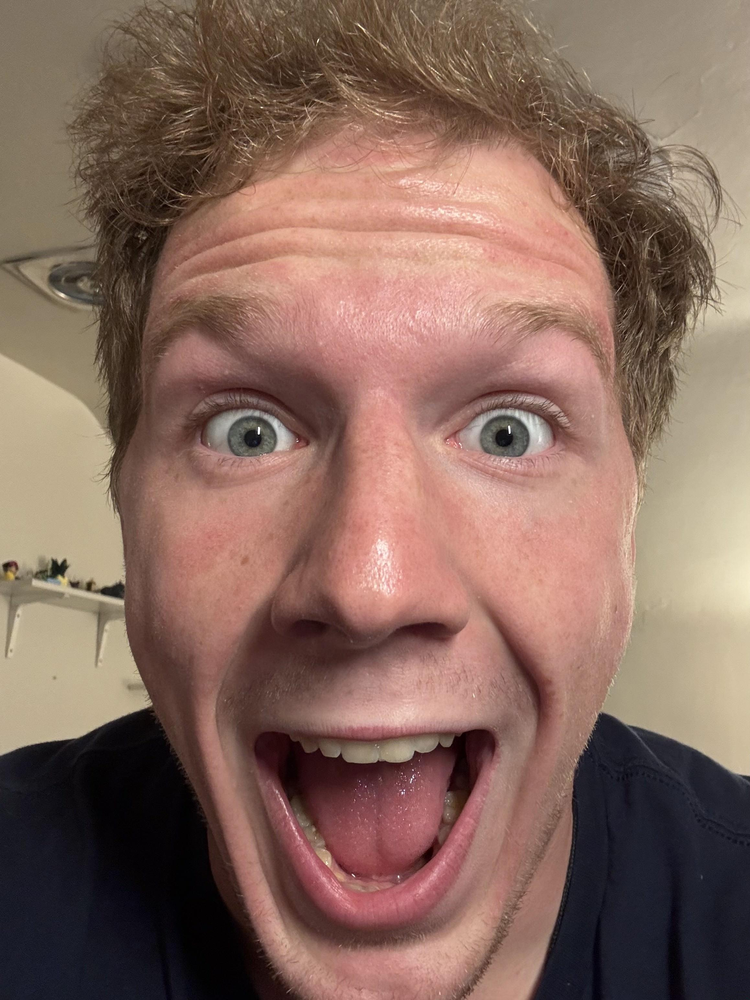

While these images all look the same, they were generated using different code. All of them convolve the selfie with a 9x9 pixel box filter, but the first two were convolutions implemented by me while the third was done using a standard library, SciPy. The first image was convolved using four nested for loops and the second one using two. As the image processing times shown in each image's caption show, reducing the nested for loops massively sped up the process. The library speeds it up even more by utilizing vector operations to minimize the number of for loops even more.


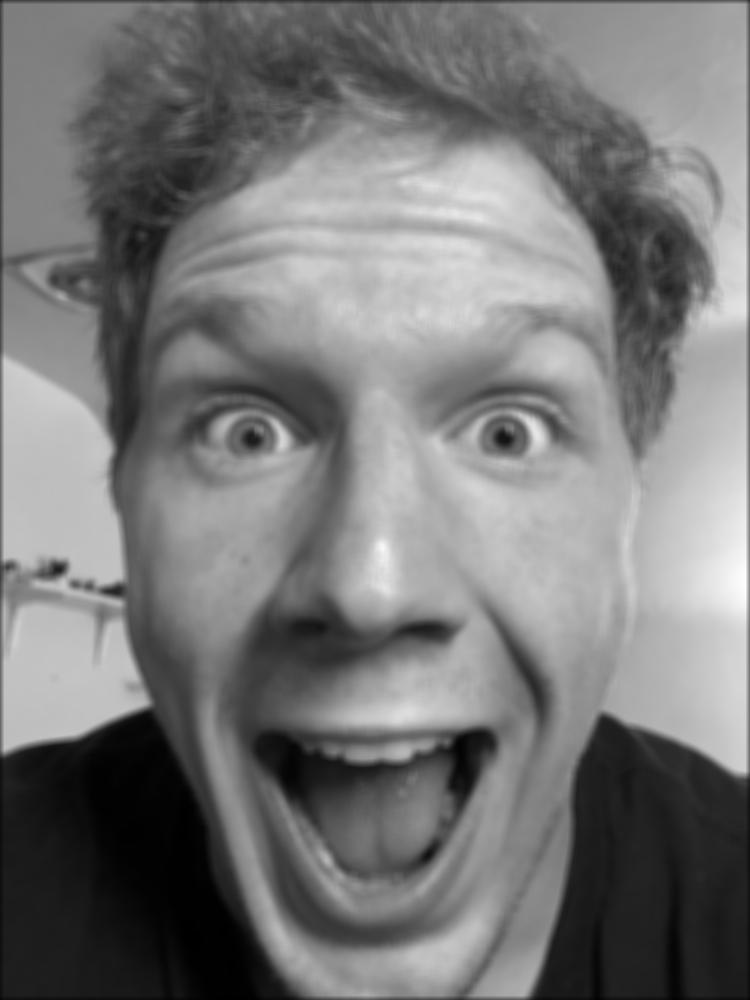
These images are also the result of convolving the selfie, though not with a box filter but rather a derivative filter. The first finds derivatives with respect to x and the second with respect to y. These "partial derivative" images locate vertivle and horizontal edges by taking on extreme values in places where nearby horizontal/verticle pixels have very different values. These derivative being very useful in computing the "gradient magnitude" (or "edge image"), as shown at the end.
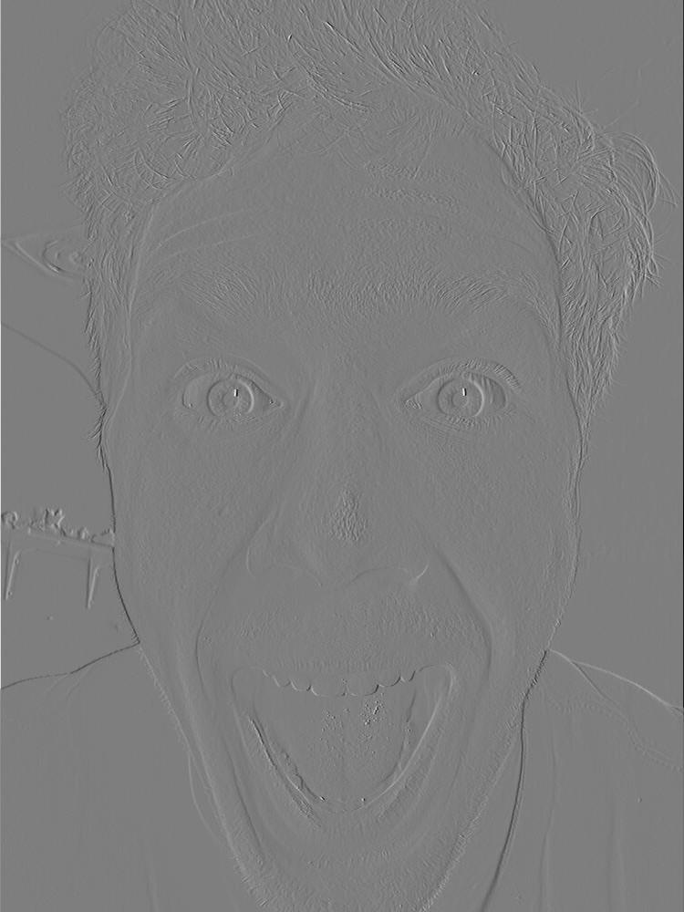


convolve_four_for_loops
def convolve_four_for_loops(image, kernel):
padded_image = pad_image(image, kernel)
pad = (kernel.shape[0] - 1) // 2
#Repetative but helpful to give variable a different name when it has a different use
kernel_center = pad
output_image = np.empty((image.shape[0], image.shape[1]))
for x in range(output_image.shape[0]):
for y in range(output_image.shape[1]):
sum = 0
for xk in range(-pad, pad + 1):
for yk in range(-pad, pad + 1):
im_value = padded_image[pad + x - xk, pad + y - yk]
kern_value = kernel[kernel_center + xk, kernel_center + yk]
sum += im_value * kern_value
output_image[x, y] = sum
return output_image
convolve_two_for_loops
def convolve_two_for_loops(image, kernel):
kernel = kernel[::-1,::-1]
padded_image = pad_image(image, kernel)
pad = (kernel.shape[0] - 1) // 2
output_image = np.empty((image.shape[0], image.shape[1]))
for x in range(output_image.shape[0]):
for y in range(output_image.shape[1]):
relevant_slice = padded_image[x : x + 2 * pad + 1, y : y + 2 * pad + 1]
output_image[x, y] = np.sum(relevant_slice * kernel)
return output_image
box_kernel
def box_kernel(kernel_size):
return np.full((kernel_size, kernel_size), 1.0 / (kernel_size ** 2))
pad_image
def pad_image(image, kernel):
pad = (kernel.shape[0] - 1) // 2
return np.pad(image, pad, mode='constant', constant_values=0)
Gradient Magnitude
In this section, I built on the strategies of the last section to isolate the edges of an image. This image below is the original.

As above, I created "partial derivative" images. The first is the partial derivative with respect to x, which can be loosely thought of as the verticle edge finder. The second is the partial derivative with respect to y, which can be loosely thought of the horizontal edge finder.


Finally, I combined these partial derivative into one image, called the gradient magnitude image because the brightness of each pixel in the gradient magntiude represents the amplitude of the gradient of the corresponding pixel in the original image. This is found by taking the square root of the sum of the squares of the pixel values from the partial derivative images.

The image on the left is the raw gradient magnitude. In it, values can be shades of gray corresponding to gradient changes not caused by edges. To fix this, I set all the pixels in the image to either black or white. Pixels that were greater than 30% bright were made white and all other pixels were made black, creating the image on the right that corresponds much more to the true edges in the image.

Why 30%?
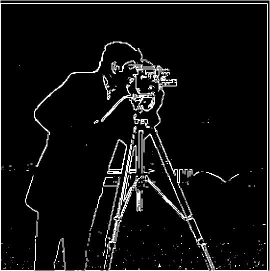
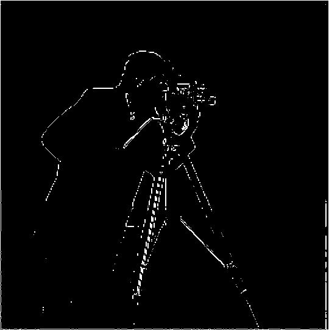
There is no perfect answer. Because of the nature of gradients, things that we don't consider edges will sometimes have a higher value than things that we do, so it's impossible to perfectly cut out all the nonedges while keeping all the edges. I chose 30% because I felt it did the best to balance these. Looking at the images above, it felt like there was too much texture in the grass at 25%. Similarly, I felt too many edges were missing at 50%.
gradiant_magnitude
def gradiant_magnitude(image):
dx = np.array([[1, 0, -1]])
dy = np.array([[1], [0], [-1]])
im_dx = signal.convolve2d(image, dx, mode='same', boundary='fill', fillvalue=0)
im_dy = signal.convolve2d(image, dy, mode='same', boundary='fill', fillvalue=0)
return np.sqrt(im_dx ** 2 + im_dy ** 2)
binary_gradiant_magnitude
def binary_gradiant_magnitude(image, threshold=0.3):
return (gradiant_magnitude(image) > threshold).astype(int)
Blur + Gradient Magnitude
To attempt to isolate the edges even better, I then blurred the image by convolving it with a 9x9 box filter before finding the gradient magnitude. This ends up reducing the gradient in areas like the grass, where blurring creates a more uniform region with less gradient spikes caused by texture. It preserves the true edges, because even after being blurred these areas maintain a sharp change in brightness (even if it is slightly less sharp). As the gradients of the nonedges was reduces, the sensitivity could be upped to 14% brightness while still picking up less nonedge pixels than before.


To complete this same process even more efficiently, I took advantage of the associative property of convolution. Instead of convolving the image with a box filter and then convolving the result with a derivative filter, I convolved the box filter with the derivative filter. This produced the following filters for the x partial derivative and the y partial derivative, respectively.


Then, using these filters and convolving with the original image I produced the partial derivative images. Combining them in the same way as before, I got the following images.
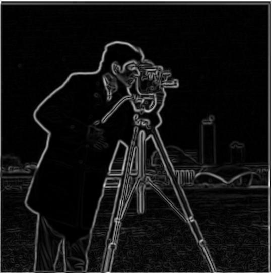
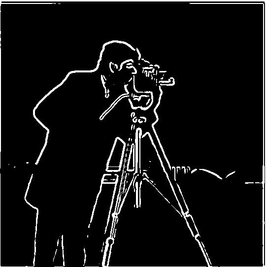
smooth_gradiant_magnitude_two_convolutions
def smooth_gradiant_magnitude_two_convolutions(image, kernel_size=9, sigma=0, threshold=0.14):
gaus = cv2.getGaussianKernel(kernel_size, sigma)
kernel = np.outer(gaus, gaus.T)
image = signal.convolve2d(image, kernel, mode='same', boundary='fill', fillvalue=0)
if threshold == 0:
return gradiant_magnitude(image)
return binary_gradiant_magnitude(image, threshold)
smooth_gradiant_magnitude
def smooth_gradiant_magnitude(image, kernel_size=9, sigma=0, threshold=0.14):
gaus = cv2.getGaussianKernel(kernel_size, sigma)
kernel = np.outer(gaus, gaus.T)
dx = np.array([[1, 0, -1]])
dy = np.array([[1], [0], [-1]])
kernel_dx = signal.convolve2d(kernel, dx, mode='full', boundary='fill', fillvalue=0)
kernel_dy = signal.convolve2d(kernel, dy, mode='full', boundary='fill', fillvalue=0)
im_dx = signal.convolve2d(image, kernel_dx, mode='same', boundary='fill', fillvalue=0)
im_dy = signal.convolve2d(image, kernel_dy, mode='same', boundary='fill', fillvalue=0)
if threshold == 0:
ret = np.sqrt(im_dx ** 2 + im_dy ** 2)
else:
ret = (np.sqrt(im_dx ** 2 + im_dy ** 2) > threshold).astype(int)
return kernel_dx, kernel_dy, ret
Part 2
Sharpening
In this section, I build upon the strategies shown in the last to sharpen blurry images. I will show the complete process using the image of the Taj Mahal shown below, as well as the start and end products of a few more examples.

A blurry image often appears sharper if it contains more high frequency information. In the last section, I showed how convolving an image with a guassian filter can produce a blurry image. This process actually preserves the low frequency information of an image (e.g. general shapes, colors) while reducing the high frequency information (details). To isolate just the high frequency information, we can subtract the low frequncy version from the original image. We can then add more high frequency strength to our original image by adding the isolated high frequcy image to the original. Although my final version does this in one step, the images below show the approximate steps of the process.
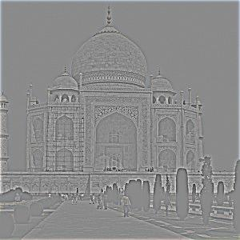
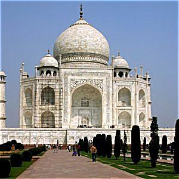
Once we have the isolated high frequency image, it's easy to adjust how much we add into the original image. The formula for creating the final image from the original and the high frequency is just: result = original + alpha * high-frequency where alpha is how much we choose to add. Here are the results for a handful of differernt values of alpha.
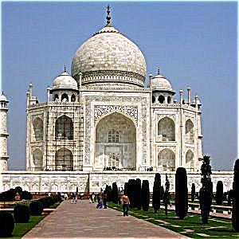
To make this entire process possible by only convolving the original image with a signle kernel is easy. Since the formula is output = input - i
This is how it looks on two images I selected. In the first, it greatly reduces the blur by using a huge alpha value. In the second, the more modest alpha value is able to subtley add some texture to the stone structures.
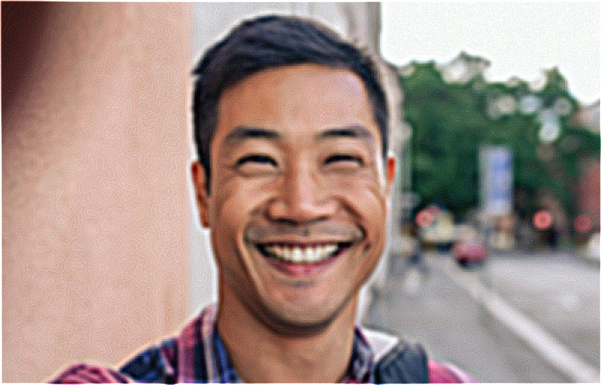
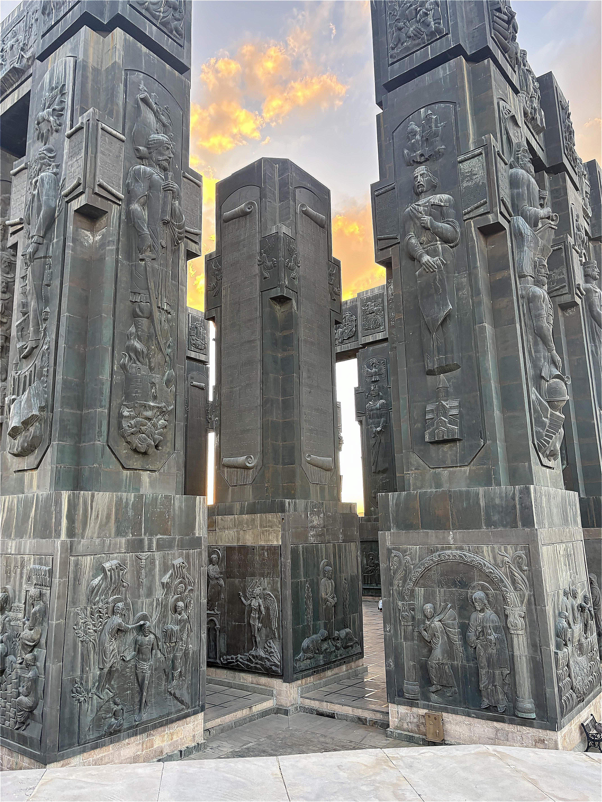
While this strategy can make the high frequency details of an image easier to spot, they can't create details that weren't there. For this reason, if we take a detailed image and blur it, when we attempt to recreate the original image using only the blurred one we get a much lower quality image. This is because the original low pass filter that blurred it permanently destroyed high frequency information about the image. The sharpening technique can enhance the surviving high frequency information, but it cannot recreate what was lost.
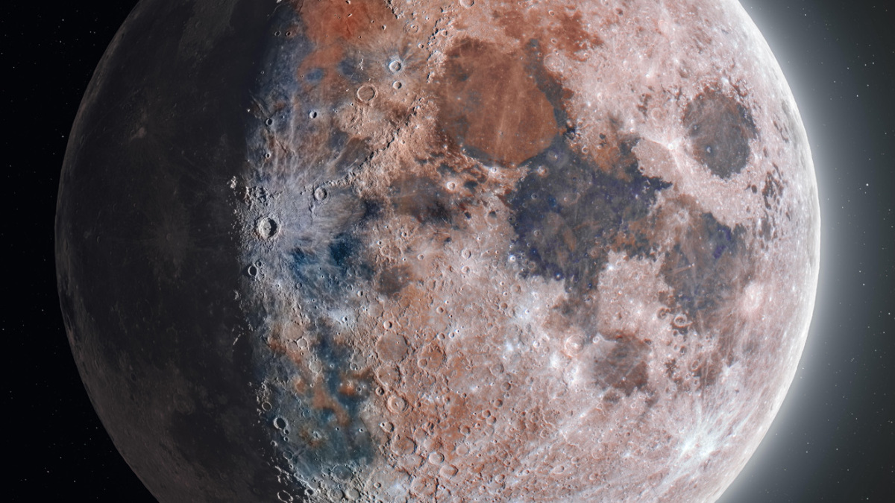
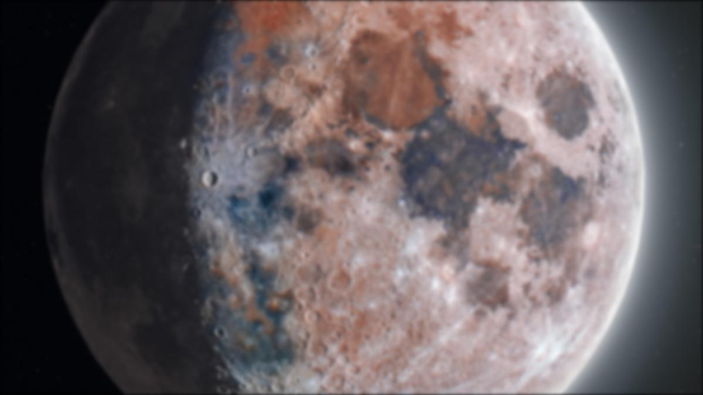
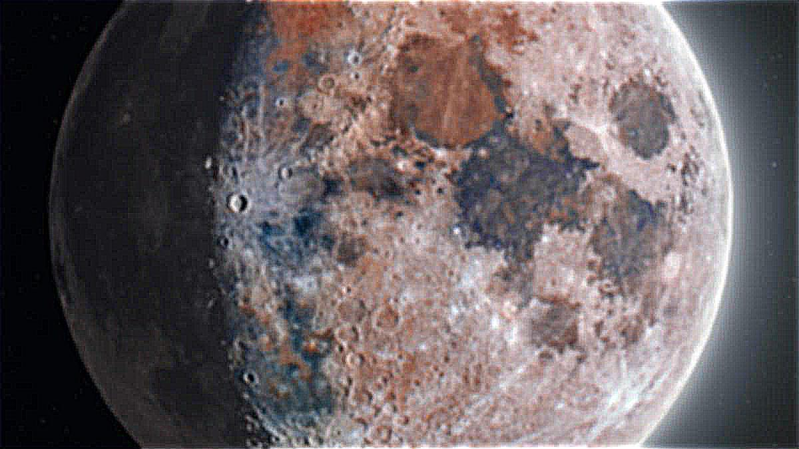
color_unmask
def color_unmask(image, kernel_size=9, sigma=0, alpha=2):
r, g, b = image[:, :, 0], image[:, :, 1], image[:, :, 2]
r = unmask(r, kernel_size, sigma, alpha)
g = unmask(g, kernel_size, sigma, alpha)
b = unmask(b, kernel_size, sigma, alpha)
return np.dstack([r, g, b])
unmask
def unmask(image, kernel_size=9, sigma=0, alpha=2):
gaus = cv2.getGaussianKernel(kernel_size, sigma)
gaus = np.outer(gaus, gaus.T)
id = np.zeros([kernel_size, kernel_size])
id[(kernel_size - 1) // 2, (kernel_size - 1) // 2] = 1
kernel = (1 + alpha) * id - alpha * gaus
return signal.convolve2d(image, kernel, mode='same', boundary='fill', fillvalue=0)
Hybrid Images
Using the high and low frequency techniques from above, I was able to create 'hybrid images' that appear like one thing close up and another from afar. This is possible because from up close, humans are quite good at percieving high frequency information, whereas from far away they tend to only register low frequency information. By stacking the high frquency information from one image on top of the low frequency information for another, we create an effect where an image looks completley different from different distances. Here is an example where we take the high frequency information from a picture of a cat and overlay it with the low frequency information from the picture of a man.


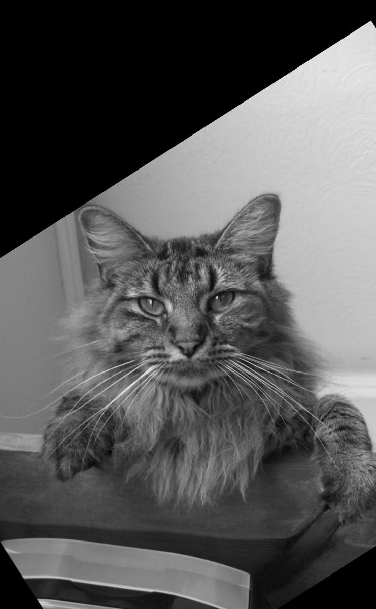
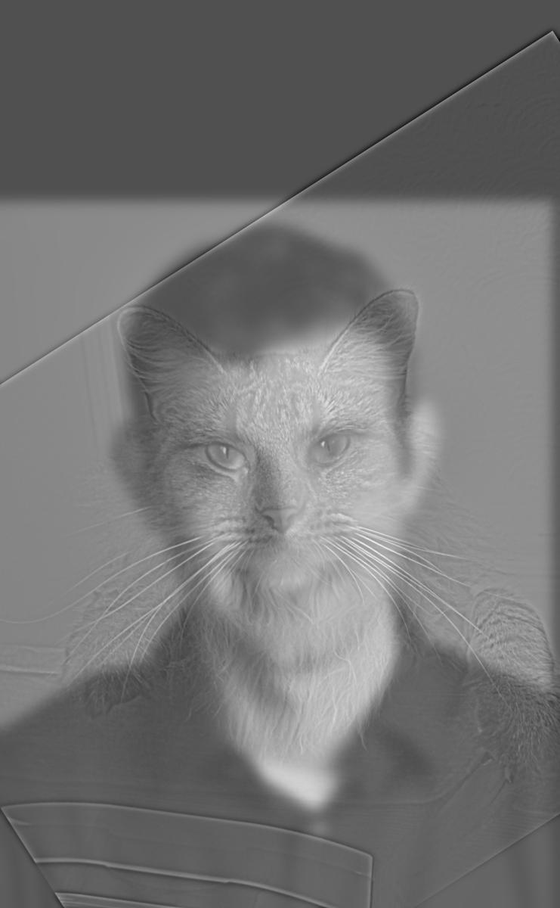
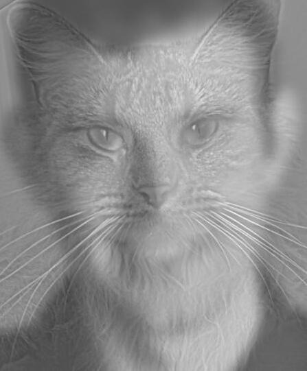
Let's dive a little deeper on these images of animated and live action Maui. I want to create an image that looks like live action up close but appears animated from far away. These are the original images I'm using as well as their cropped and scaled versions that I will be combining.
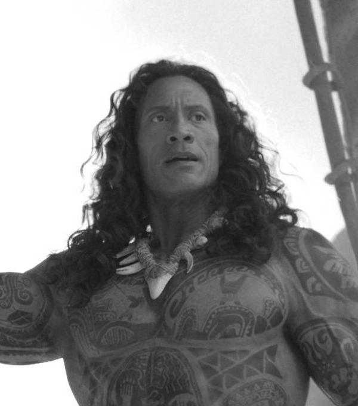
To make the hybrid image, I need a low-pass version of the animated image and a high-pass version of the live-action one. Finding the right sigma for the Gaussian kernels used to filter these images is important because sigma determines the filter's cutoff frequency. For a Gaussian filter, a larger sigma corresponds to a lower cutoff frequency, meaning that fewer high-frequency details are retained. If the low-pass image uses too small a sigma, its cutoff frequency is too high and it retains high-frequency details that are visible up close. However, if the sigma is too large, its cutoff frequency becomes too low, creating an image that is too blurry to identify even from a distance. Similarly, for the high-pass image, a sigma that is too small results in a higher cutoff frequency and can leave too much low-frequency information in the image, making it visible from afar. If the sigma is too large, the cutoff frequency becomes too low and more of the image's fine details are removed, reducing its legibility even from close up. After some experimentation, I found that a sigma of 10 for the low-pass image and 3 for the high-pass image provided the best balance. These correspond to cutoff frequencies of approximately 0.019 cycles per pixel and 0.062 cycles per pixel, respectively, using the half-amplitude definition of the Gaussian cutoff frequency. These were the resulting images.
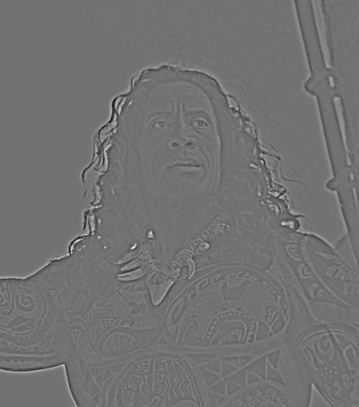
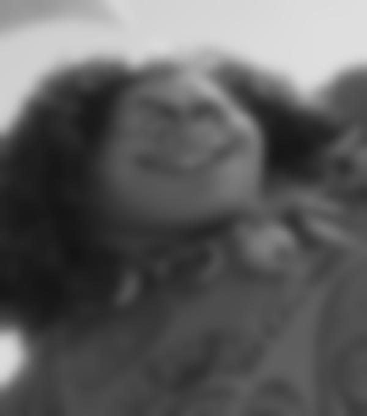
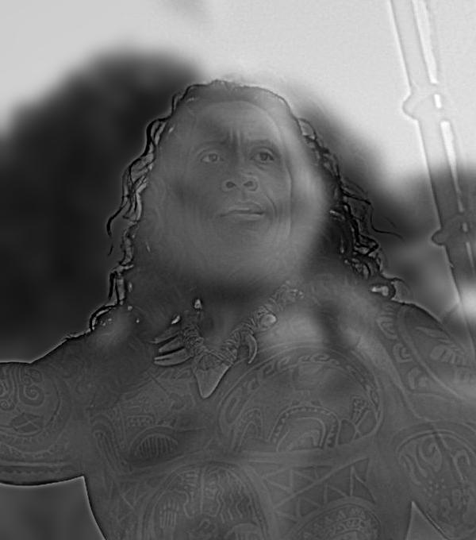
Looking at the Fourier Transforms of these images helps us see what's going on. The original images have fairly usual graphs; a spread of energy across the high and low frequencies with a huge spike at the low frequencies in the very center. The low pass image isolates just that spike in the center while the high pass removes it and retains everything else. The hybrid image combines the spike in the low frequencies from the animated image with the rest of the graph from the live action image. This makes sense as the image itself contains the low frequency version of the animated image and the high frequency version of the live action image.
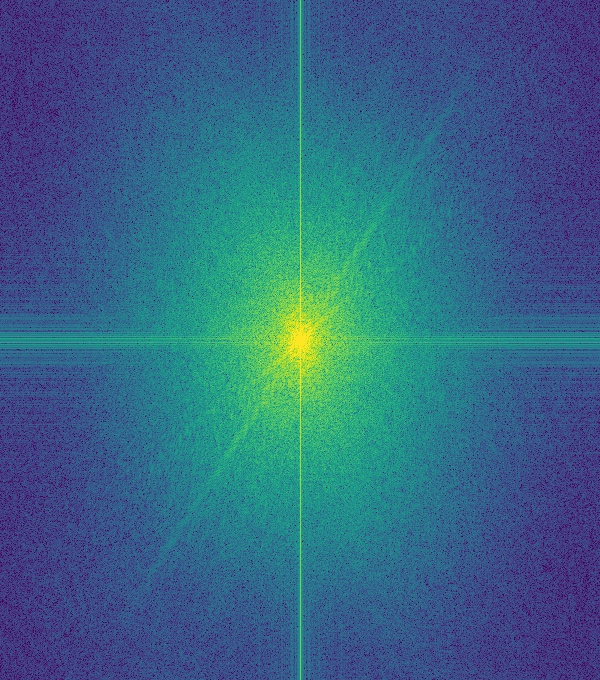
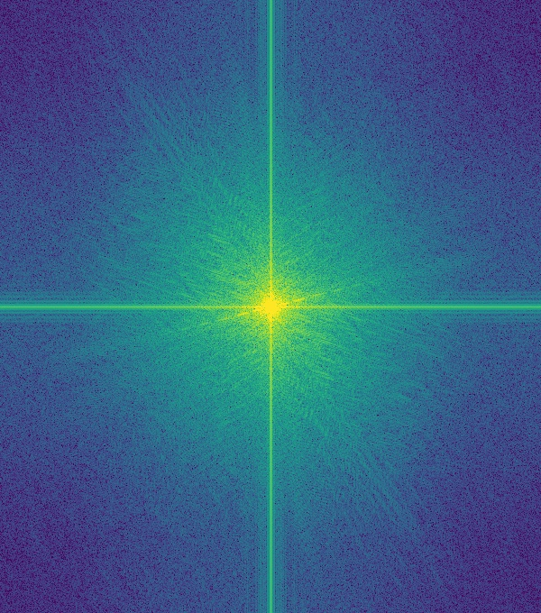
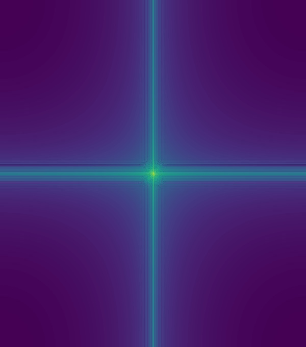
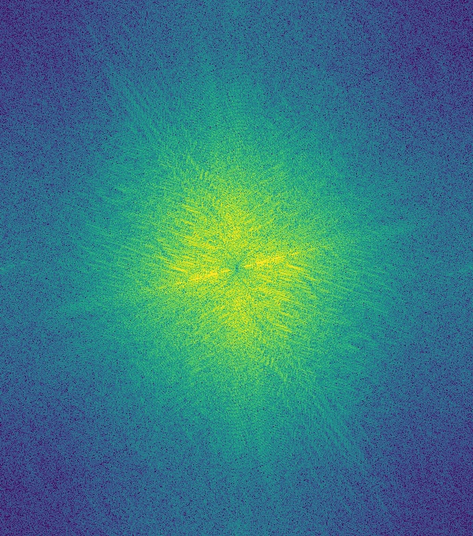
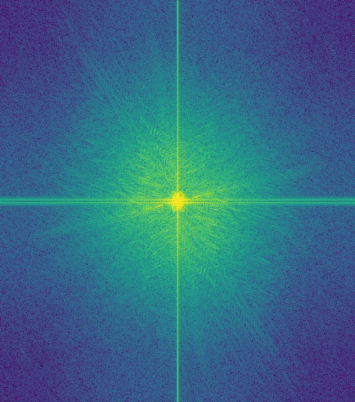
With all that in mind, here is one final set of input images and the hybrid image they created.
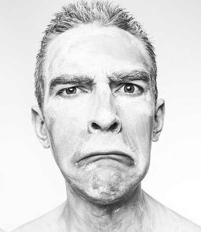
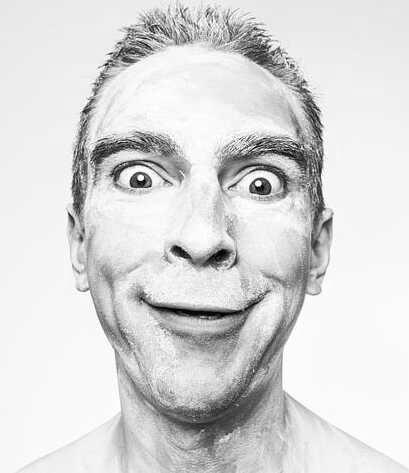
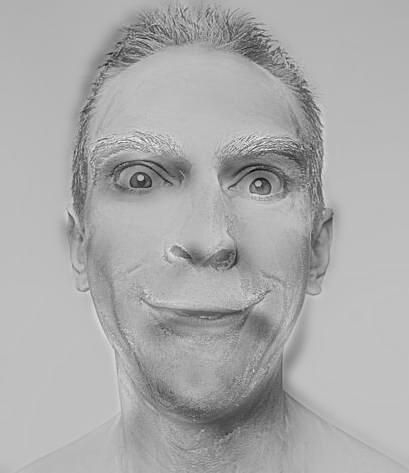
hybrid_image
def hybrid_image(im1, im2, sig1, sig2):
return blur(im1, sigma=sig1) + high_pass(im2, sigma=sig2)
high_pass
def high_pass(image, sigma=0):
return image - blur(image, sigma)
blur
def blur(image, sigma):
kern_size = 2 * math.ceil(3 * sigma) + 1
k = cv2.getGaussianKernel(ksize=kern_size, sigma=sigma)
image = signal.convolve2d(image, k, mode='same', boundary='symm')
return signal.convolve2d(image, k.T, mode='same', boundary='symm')
Gaussian and Laplacian Stacks
This is a Laplacian stack, which is similar to a Guassian stack except that it isolates individual frequencies instead of just progressively reducing frequencies. To create each element in the stack, the corresponding element in the Guassian stack is taken and the next image in the Gaussian stack is subtracted from it. This isolates a frequency band because all of the higher frequencies are already removed when starting with a Guassian convolution of the original image and all the lower frequencies are removed by subtracted the next Guassian, which contains only lower frequencies. The high, medium, and low frequencies of the apple, orange and combined images can be seen below. The original images are at the bottom and the high, medium and low frequencies are on the first, second and third rows respectively. Right now, the oraple is just a sum of the orange and apple images, but that will be refined in the next section.
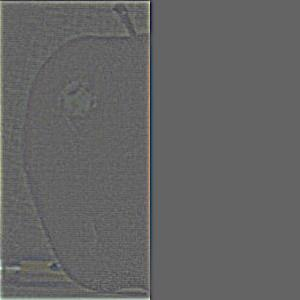
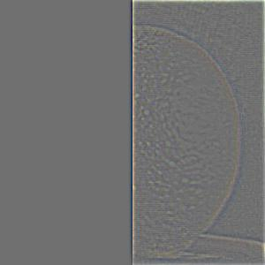
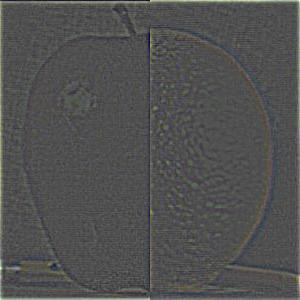
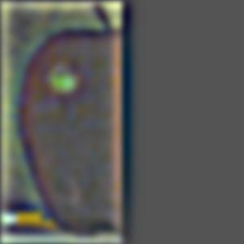
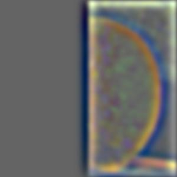
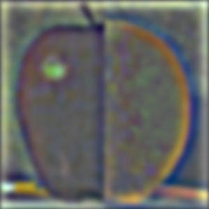
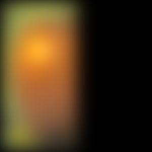
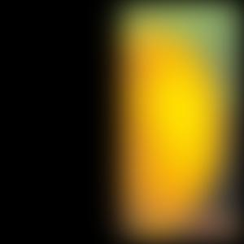
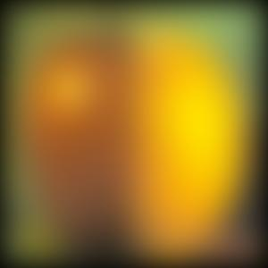
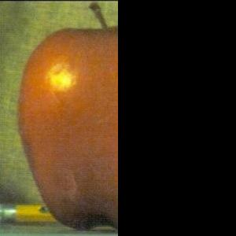
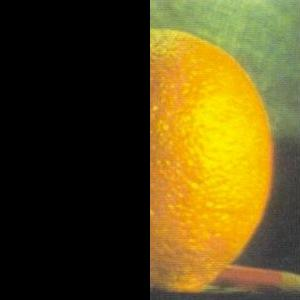
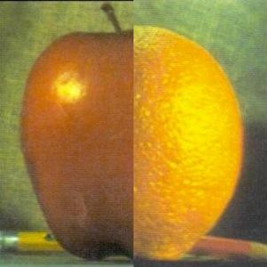
mask_half
def mask_half(image, left_half):
if left_half:
image[:, image.shape[1] // 2:, :] = 0
else:
image[:, :image.shape[1] // 2, :] = 0
return image
laplacian_stack
def laplacian_stack(image, layers=4, g_stack=np.array([])):
r, g, b = image[:, :, 0], image[:, :, 1], image[:, :, 2]
g_stack_r, g_stack_g, g_stack_b = np.array([]), np.array([]), np.array([])
if g_stack.size > 0:
g_stack_r, g_stack_g, g_stack_b = g_stack[:, :, :, 0], g_stack[:, :, :, 1], g_stack[:, :, :, 2]
r = laplacian_stack_gray(r, layers, g_stack_r)
g = laplacian_stack_gray(g, layers, g_stack_g)
b = laplacian_stack_gray(b, layers, g_stack_b)
return np.stack([r, g, b], axis=-1)
laplacian_stack_gray
def laplacian_stack_gray(image, layers=4, g_stack=np.array([])):
ret = np.empty([layers, image.shape[0], image.shape[1]])
if g_stack.size == 0:
g_stack = guassian_stack_gray(image, layers)
for i in range(layers):
if i == layers - 1:
ret[i] = g_stack[i]
else:
ret[i] = g_stack[i] - g_stack[i + 1]
return ret
guassian_stack_gray
def guassian_stack_gray(image, layers=4):
ret = np.empty([layers, image.shape[0], image.shape[1]])
ret[0] = image
sigma = 2
for i in range(1, layers):
image = blur(image, sigma)
ret[i] = image
sigma = sigma * 2
return ret
combine_stacks
def combine_stacks(stack1, stack2):
return stack1 + stack2
Multiresolution Blending
Utilizing these stacks, it is possible to smoothly blend images without creating a seam. To do so, it is necessaray to blend each level of each image's respective laplacian pyramid at a different level. If high frequency details are blended with a large overlap zone, there will be conflicting fine details in the overlap zone that look poor together. However, if low frequency information is blended over a small overlap zone, an obvious seam will appear where shapes and colors drastically change. To solve this, I created a corresponding mask that is blurred to a level fitting the frequcy of the images at the same level. The result of combining different levels of the pyramid across this mask is shown below.
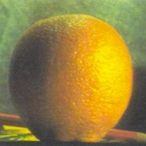


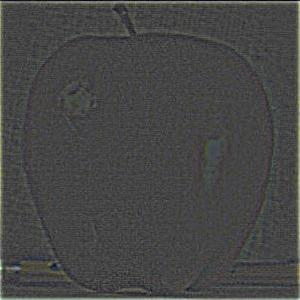
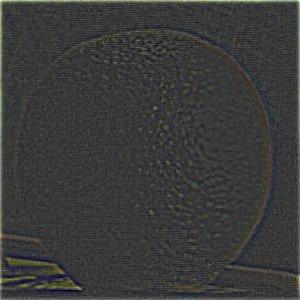

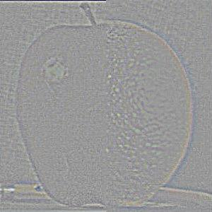
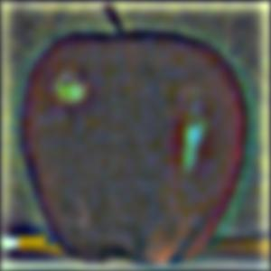
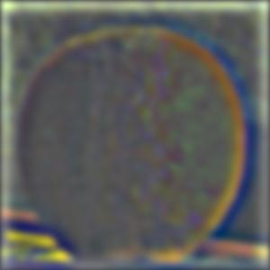
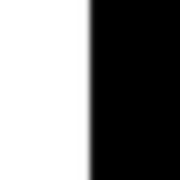
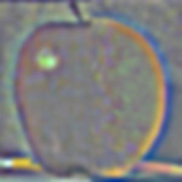
That process creates a laplacian stack of combined images. To obtain our final image, we only have to reverse the laplacian stacking process to obtain our combined image. This is possible because each element in the stack summed with the image one layer down in the gaussian stack produces the next image in the gaussian stack. Since the last image in the laplacian stack is equal to the last image in the gaussian stack, we can add the second to last laplacian layer to the last gaussian layer to produce the second to last gaussian layer. We can add this to the next laplacian layer to get to the next gaussian layer up. We can repeat this process to move up the guassian stack until we get to the very top, which is the original image! Using this process on our combined laplacian stack produces the following image, efficiently blending the apple and orange.
splice
def splice(im1, im2, mask, layers=4):
r1, g1, b1 = im1[:, :, 0], im1[:, :, 1], im1[:, :, 2]
r2, g2, b2 = im2[:, :, 0], im2[:, :, 1], im2[:, :, 2]
r = splice_gray(r1, r2, mask, layers)
g = splice_gray(g1, g2, mask, layers)
b = splice_gray(b1, b2, mask, layers)
return np.stack([r, g, b], axis=-1)
splice_gray
def splice_gray(im1, im2, mask, layers=4):
l_stack1 = laplacian_stack_gray(im1, layers)
l_stack2 = laplacian_stack_gray(im2, layers)
g_stack_mask = guassian_stack_gray(mask, layers)
g_stack_mask_inverse = (g_stack_mask * -1) + 1
ret = np.empty_like(l_stack1)
for layer in range(layers):
ret[layer] = g_stack_mask[layer] * l_stack1[layer] + g_stack_mask_inverse[layer] * l_stack2[layer]
return ret
laplacian_unstack
def laplacian_unstack(l_stack):
image = l_stack[-1]
for i in range(l_stack.shape[0] - 2, -1, -1):
image = image + l_stack[i]
return image
My own examples
Here are a couple of examples using different images. In each example the first image corresponds to the white part of the mask and the second to the black. The final product is shown below the original images and mask.